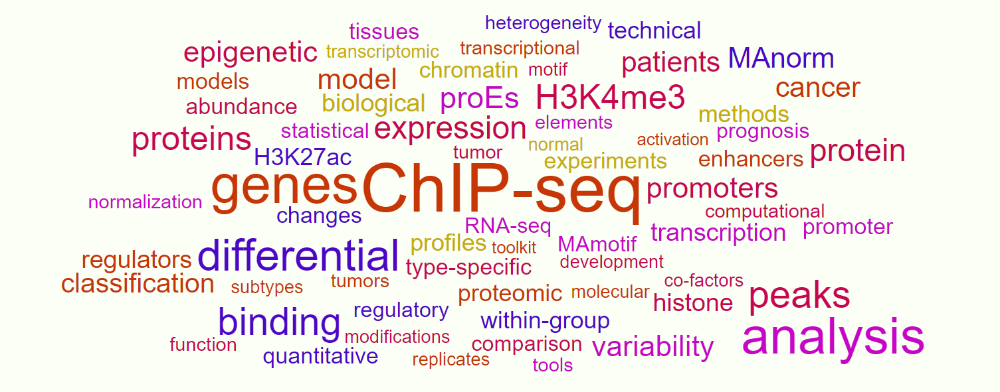

1. We combine wet-lab experiments and computational analysis of multi-omics data to investigate the onset and progression of complex diseases including various cancers (our major research focus now), the establishment of tissue-specific epigenetic landscape and gene expression program, the characteristic feature and fine structure of regulatory elements, etc.
2. We develop computational models and algorithms for large-scale omics data analysis and integration (epigenome, proteome, transcriptome, etc.), which could be generated by a variety of cutting-edge platforms including ChIP-seq, ATAC-seq, RNA-seq, mass spectrum. Here are some examples:
1) MAnorm (Shao et al., Genome Bio 2012) for quantitatively comparing two ChIP-seq samples and detecting differential binding sites between them;
2) MAnorm2 (Tu et al., Genome Res 2021) for quantitatively comparing two or multiple groups of ChIP-seq samples and detecting differential binding events on group level;
3) HyperChIP (Chen et al., Genome Bio 2022) for detecting hyper-variable ChIP/ATAC-seq signals across a panel of samples;
4) MAmotif (Sun et al., Cell Discov 2018) for quantitatively comparing two ChIP-seq samples and detecting TFs whose binding is significantly associated with the differential ChIP-seq signals as candidate cell type-specific co-regulators;
5) MotifScan (Sun et al., Cell Discov 2018) for scanning the DNA sequence of input genomic regions and detecting TF binding motifs significantly over-represented in these regions;
6) MAP (Li et al., Cell Discov 2019) for quantitatively comparing two proteomic profiles generated based isotope labeling-based quantitative proteomic platforms (iTRAQ, TMT, etc.) and detecting proteins showing significant abundance changes.
7) zMAP (Manuscript in preparation) as a set of computational tools comprising zMAP, reverse-zMAP and reverse-zMAP.Cancer, for quantitatively comparing multiple proteomic profiles (could be generated by different MS runs) and a variety of downstream analyses.